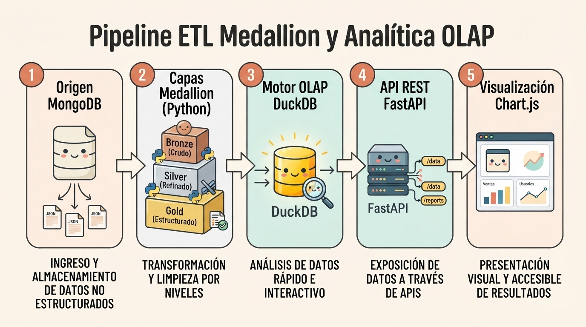

Proyectos Destacados

Asistente Inteligente GraphRAG
Centraliza y conecta conocimiento corporativo para consultar documentos, reuniones y datos mediante IA conversacional.

Gestión Documental y Grafo de Conocimiento
Plataforma web para estandarizar estructuras, controlar versiones y sincronizar archivos con Neo4j y GraphRAG.

Pipeline ETL con Arquitectura Medallion
Transforma datos de MongoDB en indicadores analíticos con Python, DuckDB, FastAPI y Chart.js.